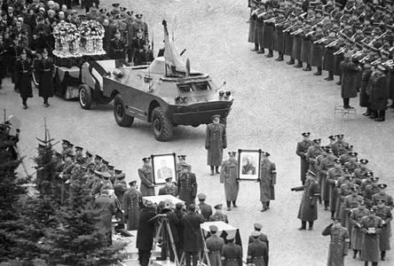

Погиб Юрий Гагарин весной 1968 г. Двадцать седьмого марта он выполнял тренировочный полет в паре с инструктором Владимиром Серегиным. Их самолет не смог выйти из совершаемого маневра, в результате чего летчики погибли. Их тела кремированы, урны с прахом пилотов захоронены в Кремлевской стене.
